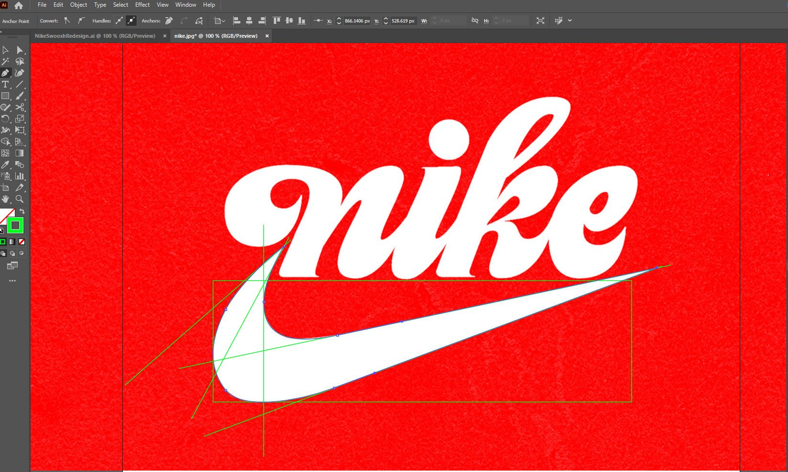

Logo Redesigns
Here are a couple of Redesigns I did of my favorite logos using Adobe Illustrator
Nike
The iconic Nike logo, created by Graphic Designer Carolyn Davidson in 1971 for only $35. This look easily became my personal favorite iteration of the logo because of the curves in the typography.
